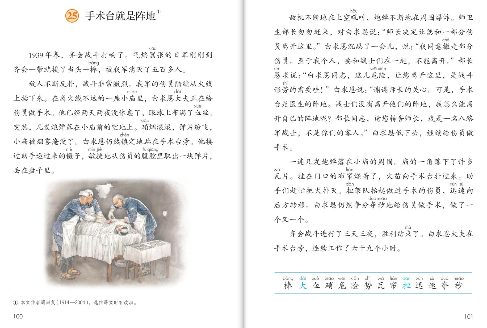
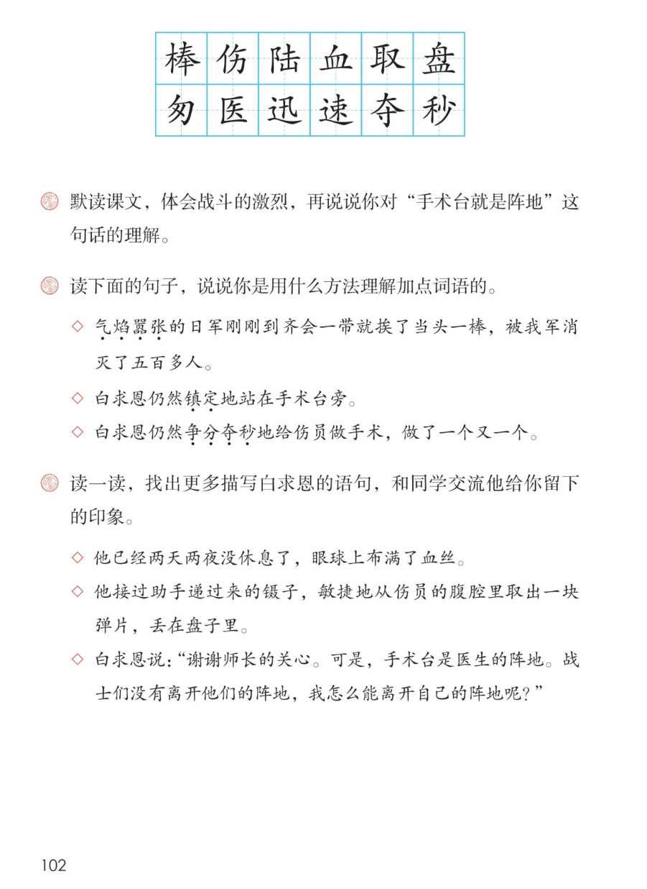

×
🔊 手机听不到声音怎么办？
① 先把手机
媒体音量调大 ，确认没开静音、没连蓝牙耳机；在微信里打开的，点右上角「⋯ → 用浏览器打开」。
② 还是没声音？到应用商店免费下载
Microsoft Edge 浏览器 （它自带朗读发声），用它打开本页面就能出声。
③ 换了 Edge 仍然没声音，说明这部手机的
硬件/系统不支持 网页朗读（多为老旧机型）；近几年买的新手机一般都能正常播放。
→ 打开声音自检
🩺 第 25 课《手术台就是阵地》· 有声图文带读
统编版语文 · 第八单元·阅读 · 课本 P100~102 · 周而复 · 素养升级版（对标 2022 课标第二学段）
课文 5 个自然段
素养目标 4
会认字 14
会写字 12
听写词 12
带着问题默读探究 6 卡
深入理解 8 题
🎧 这样学（可随时点任意一句、一个字、一个词单独听）： ① 听读课文 ——一句一句读；再带着两个问题默读 （课后题①）：战斗从哪里看出激烈？你对“手术台就是阵地”这句话怎么理解？② 学字词 ——14 个会认字、12 个会写字，点一个读一个（大、担是多音字，注意听）。③ 词语·听写 ——听写 12 个词（读两遍→你写→报答案→听示范句），再听 4 组近义词辨析。④ 深入理解 ——8 道题（认知 / 理解 / 运用 / 拓展），先想后看。⑤ 战斗中的手术台 ——按战斗打响→硝烟手术→拒绝撤离→火扑手术台→胜利结束理一理，再听分角色朗读。🌟 本单元任务：学习带着问题默读，理解课文内容；感悟美好品质，获取精神力量！
📌 本单元语文要素 ——单元导语（P95 照录）：美好的品质，犹如温暖的阳光，带给我们希望和力量 ；要点：学习带着问题默读，理解课文内容 ；学写一件简单的事 。
🀄 文化自信
🀄 文化自信
读白求恩在中国战场上坚守手术台的故事，感受国际主义精神，致敬为中国人民作出贡献的国际友人。
🗣 语言运用
🗣 语言运用
认识 14 个生字，会写 12 个字；积累气势嚣张、镇定、争分夺秒等词语，学习用联系上下文、找反义词、拆词等方法理解词语。
💡 思维能力
💡 思维能力
学习带着问题默读，理解课文内容：能从环境描写中体会战斗的激烈，说出对手术台就是阵地的理解。
🎨 审美创造
🎨 审美创造
抓住两次仍然和环境对比，体会白求恩坚守阵地、临危不惧的崇高品质，把感受讲给别人听。
点段前的 ①②③ 听整段
🔁 跟读模式：关
👁 隐藏注音（自测用）
字卡上的拼音标的是本课要认的字，读音来自课本生字表
🎤 朗读要求（老师标准） 大、担 是多音字；紧张 ：硝烟滚滚、弹片纷飞读得急促；坚定 ：白求恩的话沉着有力，部长的话恳切；坚定响亮 。
🤫 默读小提示（带着问题默读——本单元核心本领） 听读 ——点句子听老师读；第二步 带着问题默读 ——不出声、不指读，带着课后题①的两个问题，边读边圈出三处危险、两次“仍然”和 69 小时这些数字 ；第三步 交流 ——把找到的答案按顺序说一说。
①
1939年春，齐会战斗打响了。
气势嚣张的日军刚刚到齐会一带就挨了当头一棒，被我军消灭了五百多人。
📌 这一段讲：战斗背景：1939年春齐会战斗打响；气势嚣张的日军刚到齐会一带就挨了当头一棒，被我军消灭五百多人。
②
敌人不断反扑，战斗非常激烈。
我军的伤员陆续从火线上抬下来。
在离火线不远的一座小庙里，白求恩大夫正在给伤员做手术。
他已经两天两夜没休息了，眼球上布满了血丝。
突然，几发炮弹落在小庙前的空地上。
硝烟滚滚，弹片纷飞，小庙被烟雾淹没了。
白求恩仍然镇定地站在手术台旁。
他接过助手递过来的镊子，敏捷地从伤员的腹腔里取出一块弹片，丢在盘子里。
📌 这一段讲：硝烟中的手术：伤员从火线上抬下来，白求恩在小庙里做手术，两天两夜没休息；炮弹落下、烟雾淹没小庙，他仍然镇定，敏捷地取出弹片。
③
敌机不断地在上空吼叫，炮弹不断地在周围爆炸。
师卫生部长匆匆赶来，对白求恩说：师长决定让您和一部分伤员离开这里。
白求恩沉思了一会儿，说：我同意撤走部分伤员。至于我个人，要和战士们在一起，不能离开。
部长恳求说：白求恩同志，这儿危险，让您离开这里，是战斗形势的需要！
白求恩说：谢谢师长的关心。可是，手术台是医生的阵地。战士们没有离开他们的阵地，我怎么能离开自己的阵地呢？部长同志，请您转告师长，我是一名八路军战士，不是你们的客人。
白求恩低下头，继续给伤员做手术。
📌 这一段讲：拒绝撤离：敌机吼叫、炮弹爆炸，部长匆匆赶来恳求白求恩撤离；白求恩说手术台是医生的阵地，我是八路军战士不是客人，低下头继续手术。
④
一连几发炮弹落在小庙的周围。
庙的一角落下了许多瓦片。
挂在门口的布帘烧着了，火苗向手术台扑过来。
助手们赶忙把火扑灭。
担架队抬起做过手术的伤员，迅速向后方转移。
白求恩仍然争分夺秒地给伤员做手术，做了一个又一个。
📌 这一段讲：争分夺秒：炮弹落小庙周围、瓦片落下、布帘烧着火苗扑来；助手们扑灭火，担架队转移，白求恩仍然争分夺秒地手术，做了一个又一个。
⑤
齐会战斗进行了三天三夜，胜利结束了。
白求恩大夫在手术台旁，连续工作了六十九个小时。
📌 这一段讲：胜利结束：齐会战斗三天三夜胜利结束；白求恩在手术台旁连续工作了六十九个小时。
🤔 想一想（点我可跳过）
双页宽图自动占整行

第 100~101 页 · 课文（双页）

第 102 页 · 认字写字与课后练习
📖 人教版《语文》三年级上册 · 课本第 100~102 页 · 图片仅供个人学习，版权归人民教育出版社所有
📚 注释① 本文作者周而复（1914—2004），选作课文时有改动。
点一个字，听读音、词语和在课文里的句子（大、担是多音字，注意听）
结构、部首、笔画与书写提示为通用规范，供参考，以教材和老师的指导为准
棒bàng
木棒
左右 · 木 · 12画
木字旁的捺变成点，右边的奉字三横间距均匀，撇捺要写得舒展。
伤shāng
伤员
左右 · 亻 · 6画
单人旁写窄，右边上面是撇加横，下面是力字，笔顺不要写错。
陆lù
大陆
左右 · 阝 · 7画
左耳旁要写得窄小，右边的击字横画有力，竖写在正中。
血xuè
血丝
独体 · 血 · 6画
上面一撇要写得平而短，下面的皿字底要扁而稳，竖笔间距均匀。
取qǔ
取出
左右 · 耳 · 8画
耳字旁要写得窄长，右边的又字横撇收紧，长点要有力。
盘pán
盘子
上下 · 皿 · 11画
上面的舟字写得扁一些，下面的皿字底横要长，托住上面。
匆cōng
匆匆
半包围 · 勹 · 5画
勹字框要写得宽大，撇画舒展，包住里面的部分，不要写得太挤。
医yī
医生
半包围 · 匚 · 7画
先写上面的横，再写里面的矢字，最后写竖折封口——先外后内再封底。
迅xùn
迅速
半包围 · 辶 · 6画
先写里面的卂字，再写走之底，平捺要托住上面，一波三折。
速sù
迅速
半包围 · 辶 · 10画
里面的束字写紧凑，中间竖要正，走之底平捺舒展。
夺duó
争夺
上下 · 大 · 6画
上面的大字撇捺舒展，盖住下面的寸字，寸字横短、竖钩正。
秒miǎo
分秒
左右 · 禾 · 9画
禾字旁的捺变成点，右边的少字竖要正，长撇要写得有力。
点一行，听读这一组词语
棒 木棒 当头一棒 接力棒
伤 伤员 受伤 伤心
血 血丝 血汗 血流
夺 争夺 争分夺秒 夺目
读两遍 → 你在纸上写 → 报答案 → 听示范句
准备听写 · 共 12 个词
○ ○ ○
点下面的「开始听写」，听到一个词就写一个词。
▶ 开始听写
🔁 再读一遍
👁 看答案
点词听读，点句子听示范句，再自己说一句
1 木棒 本课词
示范句：我用木棒做了一根旗杆。
✏️ 我也能说：谁用木棒做什么。
2 伤员 本课词
示范句：担架队迅速转移伤员。
✏️ 我也能说：谁转移伤员。
3 大陆 本课词
示范句：轮船驶向广阔的大陆。
✏️ 我也能说：轮船驶向什么。
4 血丝 本课词
示范句：他的眼里布满了血丝。
✏️ 我也能说：谁的眼里怎么样。
5 取出 本课词
示范句：他从书包里取出一本课本。
✏️ 我也能说：谁从哪里取出什么。
6 盘子 本课词
示范句：桌上放着一只水果盘子和几只杯子。
✏️ 我也能说：桌上放着什么。
7 匆匆 本课词
示范句：他匆匆吃过早饭就上学去了。
✏️ 我也能说：谁匆匆做什么。
8 医生 本课词
示范句：白求恩大夫是一位了不起的医生。
✏️ 我也能说：谁是什么样的医生。
9 迅速 本课词
示范句：同学们迅速排好了队。
✏️ 我也能说：谁迅速做什么。
10 快速 本课词
示范句：小船快速地驶过河面。
✏️ 我也能说：什么快速地怎么样。
11 争夺 本课词
示范句：赛场上，两队争夺冠军。
✏️ 我也能说：谁和谁争夺什么。
12 分秒 本课词
示范句：争分夺秒，就是抓紧每一分每一秒。
✏️ 我也能说：争分夺秒是什么意思。
相同点 / 不一样在哪 / 各造一句
镇定 — 镇静
相同：都表示遇到紧急情况不慌乱。
不一样：镇定 偏重神态安稳、沉着；镇静 偏重情绪平稳、不慌张。
镇定：白求恩仍然镇定地站在手术台旁。
激烈 — 猛烈
相同：都表示程度强、势头大。
不一样：激烈 多用于战斗、争论、比赛；猛烈 多用于风、炮火等来势很急。
激烈：敌人不断反扑，战斗非常激烈。
敏捷 — 灵敏
相同：都表示快、反应快。
不一样：敏捷 多用于动作迅速利落；灵敏 多用于反应、感觉灵巧。
敏捷：他敏捷地从伤员的腹腔里取出一块弹片。
连续 — 陆续
相同：都可以表示一个接一个。
不一样：连续 是不间断地接着做或出现；陆续 是前前后后、断断续续地发生。
连续：白求恩连续工作了六十九个小时。
第二行正是课后题②的加点词
白求恩的两次仍然 仍然镇定地站在手术台旁／仍然争分夺秒地给伤员做手术
课后题②的加点词 气势嚣张 镇定 争分夺秒
越来越危险的环境 炮弹落在空地、硝烟滚滚 → 敌机吼叫、炮弹爆炸 → 布帘烧着、火苗扑来
白求恩的品质 坚守阵地 临危不惧 对工作极端负责 把中国人民的解放事业当作自己的事业
点一张卡，听这条默读线索
上一课我们跟着童第周学会了争气，这一课来到战火中的小庙——带着问题默读 ，看看白求恩是怎样坚守他的阵地的。
❓ 带着问题默读（本单元新本领）
默读前先问自己：战斗有多激烈？从哪里看出来？白求恩为什么说手术台就是阵地？带着问题读，答案自己会跳出来——这正是课后题①。
🔍 三处危险理线索
炮弹落在小庙前的空地 → 敌机吼叫、炮弹在周围爆炸 → 布帘烧着、火苗向手术台扑过来——默读时圈出三处危险，环境一次比一次险。
🌟 两次仍然品品质
环境越来越危险，白求恩却仍然镇定、仍然争分夺秒——把外面的险和人的稳放在一起比，坚守阵地的形象就立起来了。
💎 加点词用方法理解
气势嚣张联系上下文（刚刚到就挨打前的猖狂）；镇定找反义词（不慌张）；争分夺秒拆开来想（把一分一秒都争夺过来）——课后题②就是练这个。
📐 数字里的时间账
两天两夜没休息、三天三夜战斗、六十九个小时连续工作——把数字串起来，白求恩的坚守就不用多说了。
🔥 圈画交流
把描写白求恩的语句画下来（课后题③），说说他给你留下的印象。🌈 答案不唯一。
标「答案不唯一」的题，说得有道理都对
认知 本文的作者是谁？注释①怎么介绍的？看解析
🤔 想一想
解析：
本文作者周而复，1914—2004，选作课文时有改动——注释①写明了。
🌈 答案不唯一，说得有道理都对
认知 课文写的是哪一年、哪一次战斗？白求恩在哪里做手术？看解析
🤔 想一想
解析：
1939年春的齐会战斗；在离火线不远的一座小庙里，白求恩大夫给伤员做手术。🌈 找到时间、地点就答对了。
🌈 答案不唯一，说得有道理都对
理解 默读课文，说说你从哪些地方体会到战斗的激烈。（课后题①前半）看解析
🤔 想一想
解析：
日军气势嚣张刚到就挨当头一棒、被消灭五百多人；敌人不断反扑；炮弹落在空地、硝烟滚滚弹片纷飞；敌机吼叫、炮弹爆炸；瓦片落下、布帘烧着。🌈 默读时圈出这些环境描写再说。
🌈 答案不唯一，说得有道理都对
理解 白求恩为什么说“手术台是医生的阵地”？说说你对这句话的理解。（课后题①后半）看解析
🤔 想一想
解析：
阵地是战士坚守、不能后退的地方；对医生来说，给伤员做手术的手术台就是他战斗的岗位。战士们不离开阵地，白求恩也不离开手术台——他把做手术看作打仗。
🌈 答案不唯一，说得有道理都对
理解 读课后题②的三个菱形句，说说你是用什么方法理解加点词语的。（课后题②照录）◇ 气势嚣张的日军刚刚到齐会一带就挨了当头一棒，被我军消灭了五百多人。◇ 白求恩仍然镇定地站在手术台旁。◇ 白求恩仍然争分夺秒地给伤员做手术，做了一个又一个。看解析
🤔 想一想
解析：
气势嚣张——联系上下文和插图想象日军的猖狂样子；镇定——找反义词，是慌张的反面，再看炮火中的他一动不动；争分夺秒——拆开想：把每一分每一秒都争夺过来，抓紧时间。🌈 方法对、说出词义都对。
🌈 答案不唯一，说得有道理都对
运用 读一读，找出更多描写白求恩的语句，和同学交流他给你留下的印象。（课后题③照录）◇ 他已经两天两夜没休息了，眼球上布满了血丝。◇ 他接过助手递过来的镊子，敏捷地从伤员的腹腔里取出一块弹片，丢在盘子里。◇ 白求恩说：谢谢师长的关心。可是，手术台是医生的阵地……看解析
🤔 想一想
解析：
写作支架：第一步，画出描写白求恩的语句；第二步，说说从语句里看到一个怎样的白求恩（坚守、镇定、医术高明、临危不惧）；第三步，把印象连成几句完整的话。🌈 例：从布满血丝的眼睛和敏捷的动作里，我看到一位把伤员放在第一位的医生。
🌈 答案不唯一，说得有道理都对
运用 课文两次写“白求恩仍然……”，外面越来越危险，他却越来越坚定。这样对比着写好在哪里？看解析
🤔 想一想
解析：
炮弹落下他仍然镇定，火苗扑来他仍然争分夺秒——环境的险和人的不动摇放在一起，不用多讲一句，坚守阵地的品质自己就出来了。🌈 能结合具体句子说出对比的作用就好。
🌈 答案不唯一，说得有道理都对
拓展 你怎样理解“每个人都有自己的阵地”？你的“阵地”是什么？看解析
🤔 想一想
解析：
🌈 答案不唯一：阵地就是自己该坚守的岗位。学生的阵地是课堂和书桌，医生的阵地是手术台，老师的阵地是讲台——说清楚它为什么值得坚守就很好。
🌈 答案不唯一，说得有道理都对
💬 结构支架：战斗打响 → 硝烟中的手术 → 拒绝撤离 → 火扑手术台 → 胜利结束 。轮到你了：闭上眼睛，把白求恩坚守阵地的画面讲给家人听。
点一个角色，听他（她）的台词（朗读稿为课文原句）
🎭 旁白
1939年春，齐会战斗打响了。气势嚣张的日军刚刚到齐会一带就挨了当头一棒，被我军消灭了五百多人。 / 白求恩低下头，继续给伤员做手术。
💬 演员要读出阵地的坚守 ：环境句紧张，白求恩的话坚定，部长的话恳切
🎭 白求恩
谢谢师长的关心。可是，手术台是医生的阵地。战士们没有离开他们的阵地，我怎么能离开自己的阵地呢？部长同志，请您转告师长，我是一名八路军战士，不是你们的客人。 / 我同意撤走部分伤员。至于我个人，要和战士们在一起，不能离开。
💬 演员要读出阵地的坚守 ：环境句紧张，白求恩的话坚定，部长的话恳切
🎭 部长
白求恩同志，这儿危险，让您离开这里，是战斗形势的需要！ / 师长决定让您和一部分伤员离开这里。
💬 演员要读出阵地的坚守 ：环境句紧张，白求恩的话坚定，部长的话恳切
🎭 小老师
默读小窍门：带着两个问题读——战斗哪里激烈、手术台为什么就是阵地；再圈出三处危险和两次仍然，白求恩坚守阵地的形象就清楚了。
💬 演员要读出阵地的坚守 ：环境句紧张，白求恩的话坚定，部长的话恳切
🎭 朗读者
齐会战斗进行了三天三夜，胜利结束了。白求恩大夫在手术台旁，连续工作了六十九个小时。
💬 演员要读出阵地的坚守 ：环境句紧张，白求恩的话坚定，部长的话恳切
每题给自己打 1~3 颗星
1. 我能正确认读 14 个会认字（分清大、担的读音），规范书写 12 个会写字。 ☆ ☆ ☆
2. 我能带着课后题①的两个问题默读，找到答案。 ☆ ☆ ☆
3. 我能从环境描写中说出战斗的激烈，理解手术台就是阵地的含义。 ☆ ☆ ☆
4. 我能用联系上下文、找反义词、拆词等方法理解气势嚣张、镇定、争分夺秒。 ☆ ☆ ☆
5. 我能找出描写白求恩的语句，说出他给我留下的印象。 ☆ ☆ ☆
✍️ 交流 ：读一读，找出更多描写白求恩的语句 ，和同学交流他给你留下的印象。画出描写白求恩的语句 （如两天两夜没休息、眼球上布满了血丝）；一个怎样的白求恩 ；连成几句完整的话 。